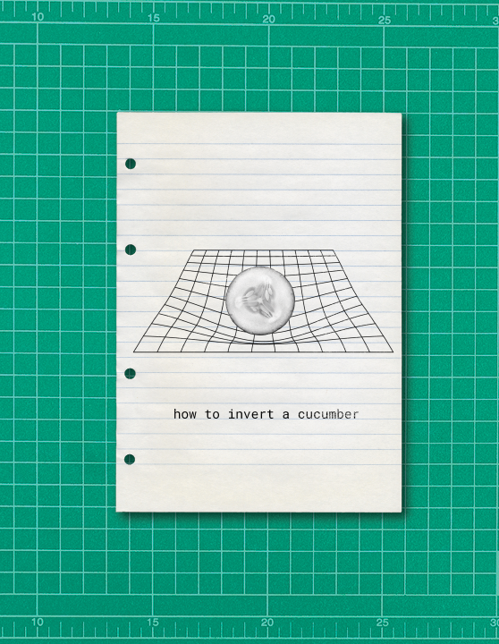
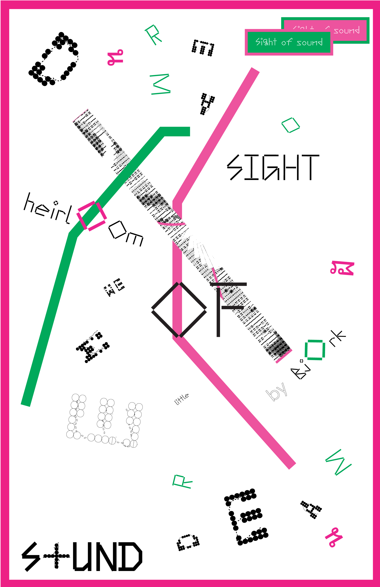
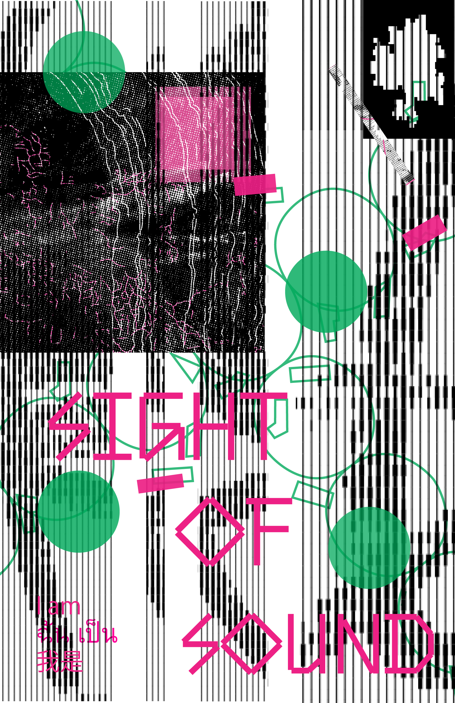

How to Invert a Cucumber?
How to Invert a Cucumber? explores the intersection of my passion for design, mathematics, and crafts.





How to Invert a Cucumber? explores the intersection of my passion for design, mathematics, and crafts.

